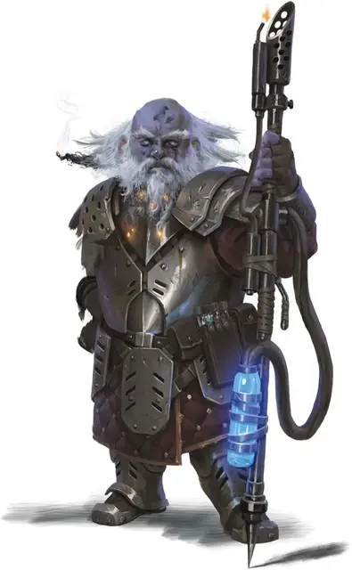

Дуэргар ксаррорн
Duergar Xarrorn
Средний Гуманоид (Дварф), законно-злой

Класс Доспеха 18 (латы)
Хиты 26 (4к8 + 8)
Скорость 25 футов
| мод | спас | ||
|---|---|---|---|
| СИЛ | 16 | +3 | +3 |
| ЛОВ | 11 | +0 | +0 |
| ТЕЛ | 14 | +2 | +2 |
| мод | спас | ||
|---|---|---|---|
| ИНТ | 11 | +0 | +0 |
| МДР | 10 | +0 | +0 |
| ХАР | 9 | −1 | −1 |
Сопротивление урону яд
Чувства тёмное зрение 120 футов, пассивное Восприятие 10
Языки Дварфийский, Подземный
Опасность 2 (450 опыта)
Бонус мастерства +2
Среда обитания Горы, Подземье
Особенности
Дуэргарская устойчивость. Дуэргар совершает с преимуществом спасброски от яда, заклинаний и иллюзий, а также спасброски для сопротивления очарованию и параличу.
Чувствительность к солнечному свету. Находясь на солнечном свету, дуэргар совершает с помехой броски атаки, а также проверки Мудрости (Восприятие), полагающиеся на зрение.
Действия
Огненное копье. Рукопашная атака оружием: +5 к попаданию (с помехой в том случае, если цель находится на расстоянии 5 футов от дуэргара), досягаемость 10 футов, одна цель. Попадание: 9 (1к12 + 3) колющего урона плюс 3 (1к6) огненного урона или 16 (2к12 + 3) колющего урона плюс 3 (1к6) огненного урона, пока увеличен.
Огненный поток (перезарядка 5-6). Из своего огненного копья дуэргар извлекает поток огня конусом в 15 футов или огненную струю длиной 30 футов и шириной 5 футов. Каждое существо в этой зоне должно пройти спасбросок Ловкости Сл 12, получая при провале 10 (3к6) огненного урона или половину этого урона при успехе.
Увеличение (перезарядка после короткого или продолжительного отдыха). На 1 минуту дуэргар магическим образом увеличивается в размере вместе со всем, что несёт и носит. Пока дуэргар увеличен, он является Большого размера, удваивает кости урона от атак оружием, основанных на Силе (уже учтено в атаке) и совершает с преимуществом проверки и спасброски Силы. Если дуэргару не хватает места, чтобы стать Большим, он приобретает максимальный размер, допустимый имеющимся пространством.
Невидимость (перезарядка после короткого или продолжительного отдыха). Дуэргар магическим образом становится невидимым в течение 1 часа или пока он не атакует, наложит заклинание, использует своё «Увеличение» или потеряет концентрацию (как если бы он концентрировался на заклинании). Любое снаряжение, одетое или носимое дуэргаром, становится невидимым вместе с ним.
Описание
Ксаррорн – специалисты, создающие орудия, смешивая алхимию и псионику.